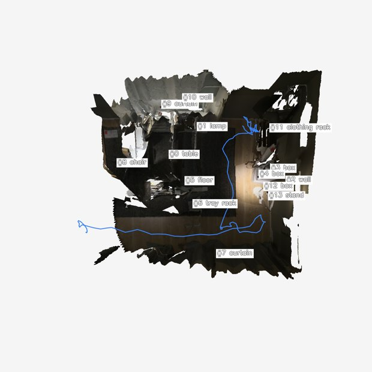
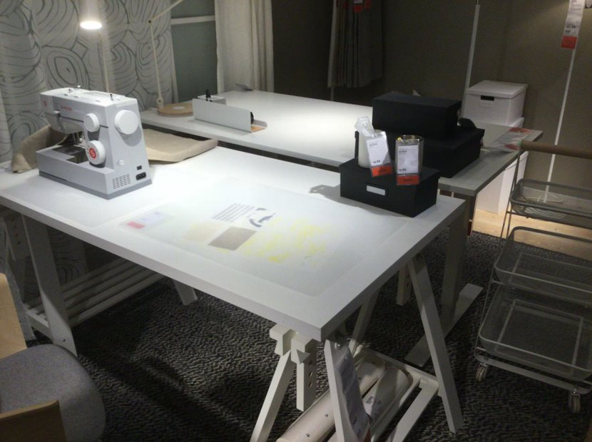
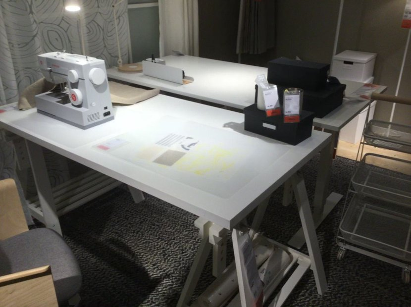
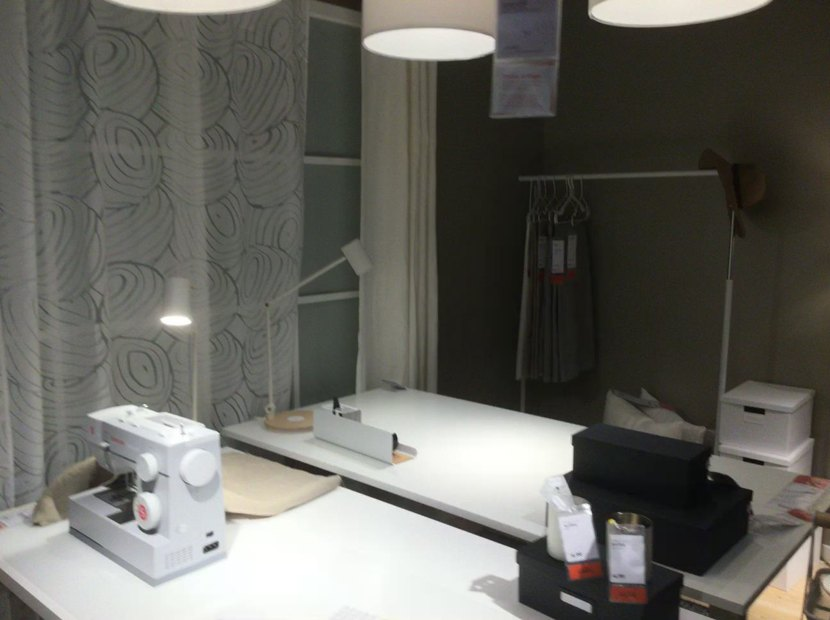
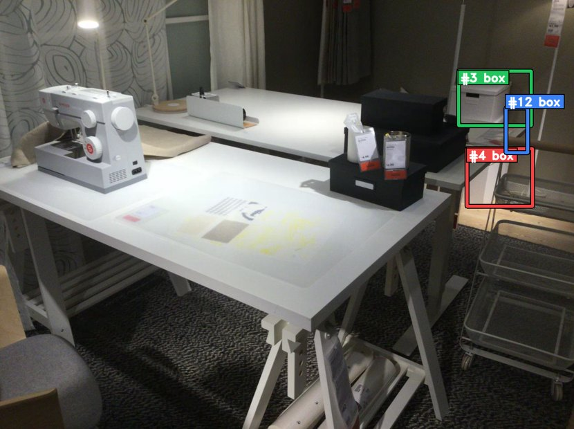

Run 001 · NR3D visual grounding (v9 catalog-first)
The box at the bottom of the stack
scannet/scene0256_00::4::40234
正确
GT#4
Selected#4
Confidence0.96
IoU1.0000
SplitHard / View-Indep
Tool calls6
Turn 0 — Agent 看到的初始上下文（v9 catalog-first）
v9 的 build_user_message 只注入 BEV 图像 和 SceneCatalog 文字目录，不 注入任何第一人称帧。Agent 必须主动调用 selector / mark_frame_with_bbox（v9.1）或历史 trace 中的旧式查看工具才能拿到第一人称证据。

data/nr3d/scannet/scene0256_00/pack_nr3d_v9_catalog_first/bev/scene_bev_nr3d.pngSceneCatalog (`Proposals by category` 块的展开形式)
catalog 为空
Agent 调用栈（每个工具一张卡片）
卡片按真实工具调用顺序展开。tool_input 与 response_text 保留原文（已做长度截断），其它说明为中文。工具家族用左侧色条区分：setup catalog selector view mark bbox legacy reason final。
01 inspect_proposal 检查候选元数据 候选 #3（box），出现于 69 帧
模型发起的工具输入
{
"proposal_id": 3
}
工具返回（原文，已截断）
{"proposal_id": 3, "category": "box", "score": 1.0, "bbox_3d_9dof": [1.2793378906509847, 0.06827779030573573, 0.6246108377198969, 0.49747185081530054, 0.49374840310671686, 0.3142409595372567, -0.39780886182056985, 0.21734860765609287, -0.4478639514433229], "frames_appeared": [0, 1, 2, 18, 19, 20, 21, 22, 23, 24, 25, 26, 27, 28, 29, 30, 31, 32, 33, 34, 35, 36, 37, 38, 39, 62, 63, 64, 65, 66, 67, 68, 69, 70, 71, 72, 73, 74, 75, 76, 77, 78, 79, 99, 100, 101, 102, 103, 104, 105, 106, 107, 108, 109, 110, 111, 112, 113, 114, 115, 116, 117, 118, 119, 128, 129, 130, 131, 132], "source": "gt", "enriched_category": "storage boxes", "compact_note": "A stack of three white, cubical storage boxes. The boxes are stacked on a light-colored wood floor, positioned in a corner against a dark wall. These boxes are used for storage and organization.", "enrichment": {"category": "storage boxes", "description": "A stack of three white, cubical storage boxes. The boxes appear to be made of cardboard or a similar material. The top box has a visible cutout handle. They are stacked vertically on top of one another.", "location": "The boxes are stacked on a light-colored wood floor, positioned in a corner against a dark wall. They are situated behind a white vertical pole and next to a pile of pillows.", "nearby_objects": ["pillows", "metal pole", "wall", "floor"], "color": "white", "usability": "These boxes are used for storage and organization. They can hold various items, and their lids protect the contents from dust. The cutout handles make them easier to lift and transport. They are designed to be stackable to save floor space."}}
02 inspect_proposal 检查候选元数据 候选 #12（box），出现于 57 帧
模型发起的工具输入
{
"proposal_id": 12
}
工具返回（原文，已截断）
{"proposal_id": 12, "category": "box", "score": 1.0, "bbox_3d_9dof": [1.2228101899477721, -0.031096329102190907, 0.41395322438754373, 0.5080728729743567, 0.2765724517138238, 0.3102454406274965, -0.2745271983070241, 0.6946202392287493, -0.2112749890693356], "frames_appeared": [0, 1, 19, 20, 21, 22, 23, 24, 25, 26, 27, 28, 29, 30, 31, 32, 33, 34, 35, 36, 37, 38, 39, 40, 41, 62, 63, 64, 65, 66, 67, 70, 71, 72, 73, 74, 75, 76, 77, 78, 98, 99, 100, 101, 102, 103, 108, 109, 110, 111, 112, 113, 114, 115, 116, 117, 118], "source": "gt", "enriched_category": "stack of storage boxes", "compact_note": "A stack of three white, rectangular cardboard storage boxes of descending size from bottom to top. The boxes are stacked on a light wood floor in the corner of a room, next to a dark gray or black area rug. These boxes are used for general storage and...", "enrichment": {"category": "stack of storage boxes", "description": "A stack of three white, rectangular cardboard storage boxes of descending size from bottom to top. The top box has a small rectangular cutout, likely for a handle or label. The boxes appear new and are stacked neatly.", "location": "The boxes are stacked on a light wood floor in the corner of a room, next to a dark gray or black area rug. They are positioned against a wall, with a white metal pole from a shelving unit or rack standing in front of them.", "nearby_objects": ["wood floor", "area rug", "wall", "shelving unit", "pillows", "curtain"], "color": "white", "usability": "These boxes are used for general storage and organization. Items can be placed inside, and the lid closed to protect the contents. The cutout can function as a handle for carrying or pulling the box, or as a slot for a label to identify its contents. They can be stacked to maximize vertical storage space."}}
03 inspect_proposal 检查候选元数据 候选 #4（box），出现于 51 帧
模型发起的工具输入
{
"proposal_id": 4
}
工具返回（原文，已截断）
{"proposal_id": 4, "category": "box", "score": 1.0, "bbox_3d_9dof": [1.2050410970227674, -0.029513506777580877, 0.19160266154122885, 0.42624139074610845, 0.556763254967936, 0.4658037575461527, 0.6680843149580875, -0.31786829529713345, -0.40017640498845664], "frames_appeared": [0, 1, 20, 21, 22, 23, 24, 25, 26, 27, 28, 29, 30, 31, 32, 33, 34, 35, 36, 37, 38, 39, 40, 41, 62, 63, 64, 65, 66, 71, 72, 73, 74, 75, 76, 77, 78, 99, 100, 101, 109, 110, 111, 112, 113, 114, 115, 116, 117, 118, 119], "source": "gt", "enriched_category": "stack of storage boxes", "compact_note": "A stack of three white, rectangular storage boxes, likely made of cardboard. The boxes are stacked on a light-colored wood floor, placed in a corner against a dark wall. These boxes are designed for storage and organization of household items.", "enrichment": {"category": "stack of storage boxes", "description": "A stack of three white, rectangular storage boxes, likely made of cardboard. The top box has a visible cutout handle on its side. The boxes appear to be new and are stacked vertically.", "location": "The boxes are stacked on a light-colored wood floor, placed in a corner against a dark wall. They are partially obscured by a white metal pole and pillows in the foreground.", "nearby_objects": ["pillows", "pole", "floor", "wall", "rug"], "color": "white", "usability": "These boxes are designed for storage and organization of household items. The cutout handle on the top box allows for easy lifting and transport. They can be stacked to save floor space or used individually."}}
04 select_by_proposal 按候选 id 搜帧 按 proposal_ids=[3, 4, 12] 搜帧：返回 3 帧 [0:000000-rgb.png, 1:000010-rgb.png, 20:000200-rgb.png]
模型发起的工具输入
{
"proposal_ids": [
3,
4,
12
],
"require_all": true,
"k": 3
}
工具返回（原文，已截断）
{"hypothesis_summary": "", "frames": [{"frame_id": 0, "visible_proposal_ids": [0, 3, 4, 6, 8, 9, 11, 12, 13], "bev_xy": null, "camera_yaw": null, "selected_because": "select_by_proposal(proposal_ids=[3, 4, 12], require_all=True)", "image_path": "data/nr3d/scannet/scene0256_00/raw/000000-rgb.png", "already_seen": false}, {"frame_id": 1, "visible_proposal_ids": [0, 3, 4, 6, 8, 9, 11, 12, 13], "bev_xy": null, "camera_yaw": null, "selected_because": "select_by_proposal(proposal_ids=[3, 4, 12], require_all=True)", "image_path": "data/nr3d/scannet/scene0256_00/raw/000010-rgb.png", "already_seen": false}, {"frame_id": 20, "visible_proposal_ids": [0, 1, 3, 4, 6, 9, 11, 12], "bev_xy": null, "camera_yaw": null, "selected_because": "select_by_proposal(proposal_ids=[3, 4, 12], require_all=True)", "image_path": "data/nr3d/scannet/scene0256_00/raw/000200-rgb.png", "already_seen": false}]}

data/nr3d/scannet/scene0256_00/raw/000000-rgb.png

data/nr3d/scannet/scene0256_00/raw/000010-rgb.png

data/nr3d/scannet/scene0256_00/raw/000200-rgb.png
05 mark_frame_with_bbox 带框标注帧 (v9.1) 带框标注 · frame 0 · ids=[3, 4, 12] · marked_file=frame_0_ids_3_4_12.png
模型发起的工具输入
{
"frame_id": 0,
"labels": [],
"ids": [
3,
4,
12
]
}
工具返回（原文，已截断）
frame_id=0 mark image at data/nr3d/scannet/scene0256_00/pack_nr3d_v9_catalog_first/bev/filtered_marks/frame_0_ids_3_4_12.png; filtered_by={'labels': [], 'ids': [3, 4, 12]}; visible_proposals=[3, 4, 12]; categories=['box', 'box', 'box']; left_to_right=['3:box', '4:box', '12:box']; boxes_2d={3: [1035, 160, 1199, 283], 4: [1054, 335, 1202, 465], 12: [1142, 243, 1191, 344]}

data/nr3d/scannet/scene0256_00/pack_nr3d_v9_catalog_first/bev/filtered_marks/frame_0_ids_3_4_12.png
06 codex_sdk_turn codex_sdk_turn {"proposal_id":4,"confidence":0.96,"summary":"The target is the bottom box in the visible three-box stack. Among the box proposals, #4 has the lowest vertical center and the marked verification frame shows #4 below #12 and #3 in the same st
模型发起的工具输入
{
"model": "gpt-5.4-2026-03-05",
"model_provider": "modelhub_adapter",
"codex_home": "/Users/bytedance/project/3DVLMReasoning/.codex-home",
"skill_path": "/Users/bytedance/project/3DVLMReasoning/.agents/skills/nr3d-codex-sdk/SKILL.md",
"skill_paths": [
"/Users/bytedance/project/3DVLMReasoning/.agents/skills/nr3d-codex-sdk/SKILL.md",
"/Users/bytedance/project/3DVLMReasoning/.agents/skills/scene-exploration-playbook/SKILL.md",
"/Users/bytedance/project/3DVLMReasoning/.agents/skills/vg-grounding-playbook/SKILL.md",
"/Users/bytedance/project/3DVLMReasoning/.agents/skills/vg-spatial-disambiguation/SKILL.md"
],
"attached_images": [
"/Users/bytedance/project/3DVLMReasoning/data/nr3d/scannet/scene0256_00/pack_nr3d_v9_catalog_first/bev/scene_bev_nr3d.png"
],
"mcp_tools_enabled": false,
"mcp_server_path": null,
"mcp_state_path": "/Users/bytedance/project/3DVLMReasoning/tmp/codex_sdk_mcp_state/scene0256_00_c947fd746de9440a9e932479224382c3.state.json",
"mcp_trace_path": null,
"cli_tools_enabled": true,
"tools_cli_path": "/Users/bytedance/project/3DVLMReasoning/src/agents/mcp/nr3d_tools_cli.py",
"cli_trace_path": "/Users/bytedance/project/3DVLMReasoning/tmp/codex_sdk_mcp_state/scene0256_00_c947fd746de9440a9e932479224382c3.cli.trace.json",
"prefix_cache_enabled": true,
"prefix_cache_session_id": "nr3d_codex_cli_only_case600_20260606_33376e2"
}
工具返回（原文，已截断）
{"proposal_id":4,"confidence":0.96,"summary":"The target is the bottom box in the visible three-box stack. Among the box proposals, #4 has the lowest vertical center and the marked verification frame shows #4 below #12 and #3 in the same stack.","uncertainties":["The prompt says 'box' while the proposals describe a stacked storage-box cluster, so the referent could in principle mean the lowest visible component within that cluster representation.","I relied on one decisive co-visible frame plus proposal geometry; no extra alternate viewpoint was needed because all three box candidates were simultaneously visible and vertically ordered."],"cited_frame_indices":[0,1,20]}